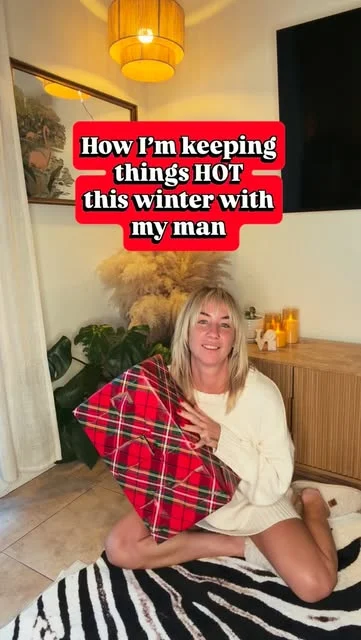
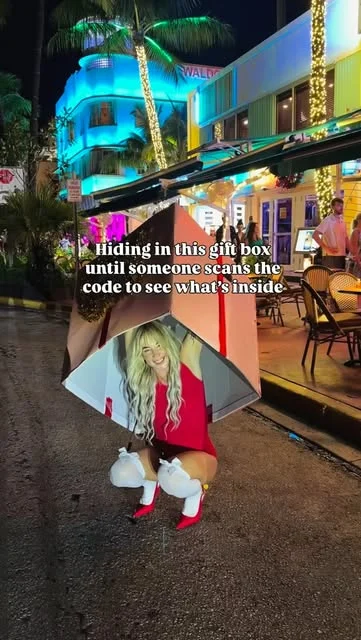
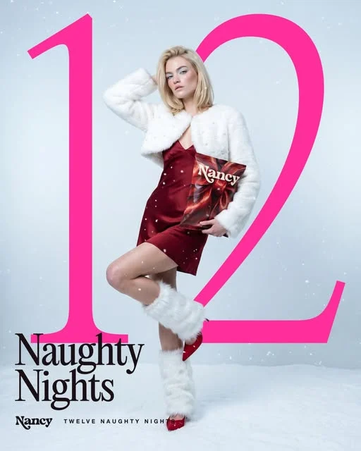

@hellonancy_officialNancy socials · Dione + Susan · Nov 26, 2026
who does what, and how we grow
Roles · How we pick content · Approvals · KPIs · Next steps

@hellonancyclub@hellonancy101
Scroll ↓
From Crystal’s brief
“You guide the how, she brings the what.”
Susan owns content creation and viral ideas. Dione sets up the process, timelines and check-ins, and walks Susan through what makes an outlier.
Part 1 · Roles
Who does what
Susan owns all the content for the week, filmed or designed. At the Tuesday meeting she walks through the week and says what she needs Dione to prep. Dione researches, suggests and preps what Susan asks for.
Susan
The what
- Concepts and viral ideas
- Finds inspos and sends them to Dione
- Owns all content for the week, filmed or designed
- Tells Dione what to prep, every Tuesday
- Films, stars in and edits most content
- Submits on time
- Loops Dione in
Dione
The how
- Strategy and account roles
- Scores inspos, sends outliers
- Preps what Susan asks for
- Calendar, scheduling, publishing
- Captions, covers, tags
- Sends Thursday plan to Crystal + Ivan
- Checks Account Status daily
- Owns all logins, fixes account issues
- Connects with our social network: Kayhan, Sara Tang, etc.
- KPIs; Friday stats report to the team
- Asset management
Platform manager · proposed
The doing
- Comments and DMs
- Owns Stories: polls, reposts
- All collabs: invites and accepting
- Researches trends and news
- Safe-marketing research to stay recommendable
- Filming and editing help
Part 1 · Roles
Susan and Dione, side by side
| Area | Susan | Dione |
|---|---|---|
| Ideas | Concepts and viral ideas; finds inspos on IG and sends them to Dione | Sends outlier references; scores Susan’s inspos |
| Picking | Picks the content and thinks it through across the week | Researches and suggests: “this would be great, want to try it?” Never assigns or plans for her |
| Making | Films, stars in and edits; decides which carousels and designed pieces the week needs | Makes the carousels, statics, AI pieces and recuts Susan asks for; hand-only filming (limited props). Doesn’t plan her own content |
| Ownership | Owns the content end to end; submits on time; loops Dione in | Gives info and research; assists so it happens |
| Approvals | Every Thursday: next week’s content and captions | Shares it with Crystal and Ivan, who give final approval |
| Results | Makes more of what wins | Friday stats report to the team |
Part 2 · How we pick content
Every content week: 80% viral, 20% tests
1
Susan finds inspos
Formats from IG she wants to make.
2
Dione scores them
Is it a proven viral or outlier format?
3
Not viral?
Susan explains why she wants it and what it will cost. Low cost: we do it.
4
Susan plans the week
Picks and spreads posts across the days, with captions, by Thursday, and loops Dione in.
Our focus now is going viral, so we replicate proven formats.
Roles · Platform manager (if approved)
What the role would cover
Today this work is split between Daphne, Johnny and Dione, and some of it has no owner yet. A platform manager would bring it all under one person.
Platform manager · who does it today
- Replies to comments Mostly Daphne · split by brand
- Replies to DMs Mostly Daphne · split by brand
- Owns Stories: polls, reposts Daphne + Johnny
- All collabs: sending invites and accepting them Daphne + Johnny
- Researches what’s trending: on IG, in marketing, in the news Dione
- Researches safe marketing: how to keep us eligible for recommendations Dione
- Filming and editing help To decide
Stays with Dione
- Account Status on all four accounts, checked daily
- All logins, and fixing account issues
- Our social network: Kayhan, Sara Tang, etc.
- Captions, covers, tags
- Scheduling and publishing
- Content calendar
- Outlier research and scoring
- Reporting to Crystal
- Asset management
Part 3 · The plan
Four accounts, four jobs
Official
@hellonancy_official4 / weekShop window: product, vibe tests, campaigns, testimonials
Club
@hellonancyclub4 / weekPlayground: trends, friendship dynamics, outliers
101
@hellonancy1013 / weekClassroom: doctors, myth busters, mini mics

VIP
@hellonancyvipLaunches onlyLaunch party: insider access, perks, UGC, influencers
Part 3 · Susan’s proposal
Weekly grid and a monthly shoot
Proposal · not approved yet| Day | Official | Club | 101 |
|---|---|---|---|
| Mon | Campaign carousel | Friendship / couple reel | Myth busters carousel |
| Tue | DIY cocktail vibe test | Trend adaptation with Lem | – |
| Wed | – | Challenge with product | Cozy with Nancy interview |
| Thu | Winning Club or 101 reel | Outlier concept | – |
| Fri | ASMR bells vibe test | – | Doctor clip or quote |
Monthly shoot: one content day to batch a month of content. Needs approval first (next section).
Part 3 · How approvals work
Our week, and how approvals work
Weekly content · no approval needed per post
Tue
Team meeting
8:30 pm Susan’s time. Susan walks through the whole week and says what Dione should prep.
Thu
Next week goes to marketing
Content plus captions to Crystal and Ivan for final approval. Thursday, not Friday, so there’s time to adjust.
Fri
Stats report
Dione shares the week’s numbers with the team. Next week we just film and post.
Monthly budget: Susan proposes her content-making budget for the month (props, extras, shoots) to marketing first: Crystal, Ivan and Dione.
Bigger proposals · new formats, shoots, spend
Susan brings it to Crystal, Ivan and Dione first. Once marketing is aligned, we pitch it to the founders together, with the team backing it.
Part 4 · KPIs
Where we are now
| KPI | Official | Club | 101 | VIP |
|---|---|---|---|---|
| Followers | 37.9K | 12 | 6 | 88 |
| Views | 956K / week | 251 per reel | 139–362 per reel | 2.5K–5.7K per reel* |
| Engagement / view | 0.89% | ~1% | under 1% | ~1% |
| Organic vs ads | 40% / 60% | No ads | No ads | No ads |
| Posting | Regular | 5 posts so far | Last post Nov 9 | Collabs with Official |
Official: October weekly average from Social Stats (382K organic, 574K from ads). Others: profiles on Nov 25. *VIP views are shared collabs with Official.
Part 4 · KPIs · Official
4 numbers we watch, weekly and monthly
The weekly number is the minimum. Hit it every week and the month takes care of itself.
1 · Views
What it is: how many times our posts were watched in a week.
Now: 956K a week
December: at least 956K every week → 4.1M+ for the month.
Why: first we hold our normal level. In January we set a new goal from our Aug–Nov average.
2 · Engagement
What it is: out of every 100 people who watch, how many like, comment, save or share.
Now: about 1 in 100 (0.89%), about 8.5K interactions a week
December: 1.15% every week, about 11K interactions a week → 47K+ for the month. Then 1.4% in Jan, 1.65% in Feb.
Why: the average for brands is about 2 in 100 (1.9%, Dash Social 2026). We climb there step by step.
3 · New followers
What it is: how many new people follow us each week.
Now: to check in Meta
Goal: at least 80 every week → 340+ for the month.
Why: a normal account our size grows about 0.9% a month, which is about 340 a month (Virev 2026, 126K accounts).
4 · Ad cost
What it is: what we pay for every 1,000 views when we run ads.
Now: to check in Ads Manager
Goal: under $5 every week and for the month.
Why: Reels ads usually cost $4–6 per 1,000 views. Under $5 is already our rule.
How we check: every Friday we compare the week to the goal. Each month: beat it 3 of 4 weeks, raise it 10%. Miss 2 or more, keep it and find out why. End of February: reset with the founders. Club, 101 and VIP get their own view and follower goals after 4 weeks of posting.
Part 5 · Next steps
Who does what next
| What | Who | When |
|---|---|---|
| Agree the roles, the 80/20 rule and the approval process | Dione + Susan | Today, Nov 26 |
| Discuss NYLON and BFCM | Dione + Susan | Today, Nov 26 |
| Propose the December content budget to marketing | Susan | Next Tuesday meeting |
| Plan the first content week and send inspos for scoring | Susan | This week |
| Pull Aug–Nov numbers to set the real baseline | Dione | By Dec 2 |
| Restart 101 at 3 posts a week | Susan | From Dec 1 |
| Bring the grid and monthly shoot proposal to Crystal and Ivan | Susan | When ready |
| Weekly team meeting, 8:30 pm Susan’s time | Everyone | Every Tuesday, from Dec 1 |
| Send next week’s content and captions to Crystal and Ivan | Susan | Every Thursday, from Dec 3 |
| Weekly stats report to the team | Dione | Every Friday, from Dec 4 |
| Platform manager role to Crystal for approval | Crystal | After review |